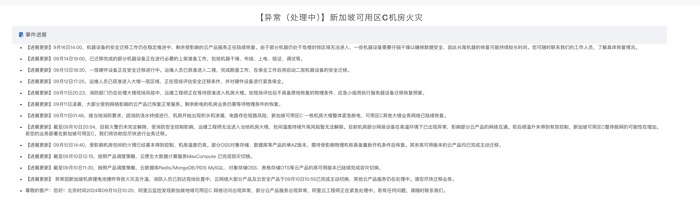

阿里云新加坡机房火灾
https://status.alibabacloud.com/#/eventDetail?eventId=21

到目前处理差不多6天了，还没有完全恢复。看了一个机房故障的话，短时间不太好搞。
[!NOTE]
- 【进展更新】9月16日14:00，机器设备的安全迁移工作仍在稳定推进中，剩余受影响的云产品服务正在陆续恢复。由于部分机器仍处于危楼封锁区域无法进入，一些机器设备需要仔细干燥以确保数据安全，因此长尾机器的恢复可能持续较长时间。您可随时联系我们的工作人员，了解具体恢复情况。
- 【进展更新】09月14日19:00，已迁移完成的部分机器设备正在进行必要的上架准备工作，包括机器干燥、布线、上电、验证、调试等。
- 【进展更新】09月13日18:30，一层硬件设备正在安全迁移进行中。运维人员已获准进入二楼，完成勘查工作，在保全工作后将启动二层机器设备的安全迁移。
- 【进展更新】09月12日17:25，运维人员已获准进入大楼一层区域，正在现场评估安全迁移条件，并对硬件设备进行紧急保全。
- 【进展更新】09月11日20:23，消防部门仍在处理大楼现场风险中，运维工程师正在等待获准进入机房大楼。如现场评估后不具备原地恢复的物理条件，应急小组将执行服务器设备迁移恢复预案。
- 【进展更新】09月11日凌晨，大部分受到网络影响的云产品已恢复正常服务。剩余断电的机房业务仍需等待物理条件的恢复。
- 【进展更新】09月11日01:46，接当地消防要求，因消防浇水持续进行，机房开始出现积水和渗漏，电路存在短路风险，新加坡可用区C 一栋机房大楼整体紧急断电，可用区C其他大楼业务网络已陆续恢复。
- 【进展更新】截至09月10日20:04，目前火警仍未完全解除，受消防安全控制影响，运维工程师无法进入当地机房大楼，包间温度持续升高风险暂无法解除。目前机房部分网络设备在高温环境下已出现异常，影响部分云产品的网络互通。若后续温升未得到有效控制，新加坡可用区C整体脱网的可能性在增加。若您的业务部署在新加坡可用区C，我们将协助您尽快进行业务迁移。
- 【进展更新】09月10日14:40，受影响机房包间的火情已经基本得到控制，机房温度仍高。部分OSS对象存储、数据库等产品的单AZ版本，需待受影响物理机柜具备重新开机条件后恢复。其余高可用版本的云产品均已完成主动迁移。
- 【进展更新】截至09月10日12:15，按照产品调度策略，云原生大数据计算服务MaxCompute 已完成容灾切换。
- 【进展更新】截至09月10日11:30，按照产品调度策略，云数据库Redis/MongoDB/RDS MySQL、对象存储OSS、表格存储OTS等云产品的高可用版本已陆续完成容灾切换。
- 【进展更新】 异常因新加坡机房锂电池爆炸导致火灾及升温，消防人员已到达现场处置中，云网络大部分产品及云安全产品于09月10日10:55已完成主动切换，其他云产品服务仍在处理中。请您尽快迁移业务。
- 尊敬的客户：您好！北京时间2024年09月10日10:20，阿里云监控发现新加坡地域可用区C 网络访问出现异常，部分云产品服务出现异常，阿里云工程师正在紧急处理中。若有任何问题，请随时联系我们。